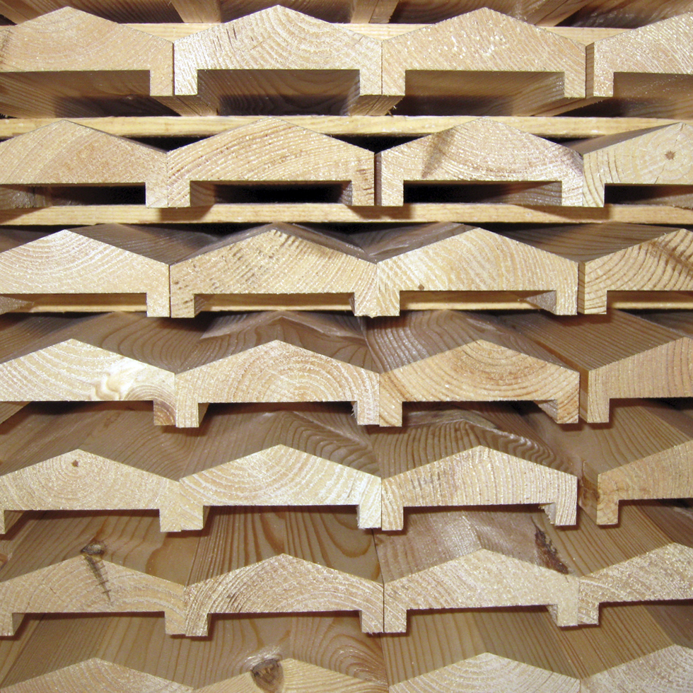

CE dla drewna konstrukcyjnego
Na oryginalnym serwisie firma akcentuje posiadanie oznaczenia CE dla drewna konstrukcyjnego. W nowej wersji traktujemy to jako kluczowy komunikat jakościowy dla wykonawców i inwestorów.
Ten obszar warto było odtworzyć jako osobną podstronę, bo na oryginalnym serwisie jest jednym z najmocniejszych argumentów sprzedażowych firmy.
Na oryginalnym serwisie firma akcentuje posiadanie oznaczenia CE dla drewna konstrukcyjnego. W nowej wersji traktujemy to jako kluczowy komunikat jakościowy dla wykonawców i inwestorów.
Certyfikat FSC wzmacnia wiarygodność pochodzenia surowca i jest ważny zarówno dla klientów biznesowych, jak i dla świadomego rynku detalicznego.
Jakość to nie tylko dokument. To także przewidywalna wilgotność, dokładność obróbki, klarowne sortowanie i dopasowanie parametrów produktu do przeznaczenia.

W kolejnym etapie możemy dołożyć rzeczywiste skany certyfikatów lub przygotować nowoczesne wizualne karty certyfikacyjne, jeśli chcesz rozbudować tę sekcję mocniej.
Producent wyrobów drewnianych w miejscowości Tyble, Sokolniki, województwo łódzkie.